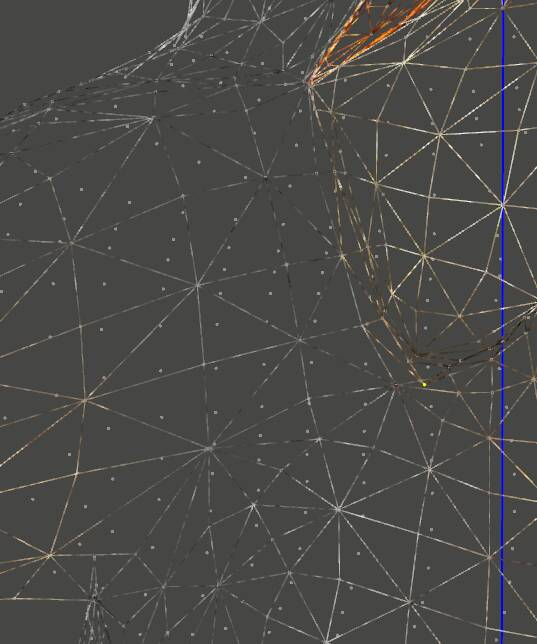

ДЫРА — разрыв сетчатой оболочки объекта (обычно это существо, или броня) видимый только в ИГРЕ и частично в КС.
В 3д МАХ и нифскопе все Прекрасно!
Безобразие это заметно только в игре при определенных движениях объекта а, иногда и в редакторе.
Важно!
Прежде чем бежать латать дыры, как таковые, сперва следуют проверить базовые настройки скининга.
Т.е. может иметь место быть банальная ошибка веса вертекса.
Дыра - возникает строго на стыке островов текстуры, ака по шву развертки и при участии весов от нескольких костей!
Т.е. основной "виновник" дыр, это развертка модели.
А помощник ей в этом Скининг, воздействующий более чем 4ми костями на вертекс находящийся по линии шва развертки.
Если на объекте нет развертки от слова "совсем", то дыры не возникают при (практически) любом кол-во костей воздействующих на вертекс.
Т.е. если заскинить сферу (предварительно преобразовав в edit mesh) на десяток другой костей, щелей не будет.
Но если добавить развертку текстуры, то в игре (при наличии анимации костей) будут появляться щели.
При этом, если в готовом ниф файле, в настройках шейпдаты, просто отключить развертку (has UV - no) модель будет создавать КТД.
Т.е. нельзя просто так отключить развертку на модели, впрочем такое делается только ради "науки", для решения проблемы щелей это неподойдет.
Примечание.
Возможно, в 2024ом году, это безобразие было поправлено в МВСЕ!
Т.е. был добавлен некоторый патч, который предохраняет появление щелей.
Возможно для это потребуется устновить флаг 512 на все шейпы (в модели) содержащие скин.
Однако, для ванильной версии игры и если не используется МВСЕ, все описанное здесь далее, будет верно!
Greatness7 писал:
The limit is 4 bones per drawable, not per vertex.
If you exceed the limit the game does something called partitioning,
which basically entails separating the mesh into a bunch of sub-meshes and assigning each of them up to 4 bone influences.
It often ends up with the problem you're seeing; where two partitions share a vertex but have different bone influences.
You can try using fewer bones and might get better luck from the partitioning algorithm.
The only truly reliable way though is to manually split up the mesh yourself and stick with 4 or less bones per shape.
"Дыры" связаны с механизмом движка разделяющего единый вертекс, находящийся по линии такого шва, на несколько отдельных.
А также, с механизмом так называемых SkinPartitions, которые разделяют оный вертекс еще и между 4мя костями.
Если поверхность имеет более 4х костей в настройках скининга.
Т.е. те несколько вертексов, что создает движок в таком месте, могут оказаться в разных скинпартитиях.
Подобное разделение весов костей и приводит к нарушению "баланса сил воздействия".
Где каждая кость получает свою силу воздействия на вертекс согласно уже имевшемуся в нем значению.
Т.е. костей на вертекс может быть более 4х и в этом случае, он может оказаться в нескольких SkinPartitions сразу.
Что при изначально малом весе единого вертекса и при влияния на него более чем 4х костей, в настройках скина, и приводит к еще большему падению значений!
И тогда, одна из костей, получившая наибольший вес, начинает оттягивать вертекс на себя с большей силой, чем оную могут скомпенсировать остальные веса.
Тем более, что оные SkinPartitions создаются средствами движка на автомате.
И прямое управление оными, через плагины к МАХу невозможно.
Равно, создание SkinPartitions средствами нифскопа, проблематично.
Опция "make skip partition" делает это с ошибками, а в ручную, это долго и неудобно.
Латание дыр — нудный процесс, поскольку не имеет наглядности в МАХе и правки приходиться очень часто проверять в игре.
И здесь очень важно понимать, по какому принципу возникает проблема!
Собственно это и показано выше.
Это шов развертки текстуры в местах, где на вертекс приходится воздействие от более чем двух костей.
"Лечение" проводится редактированием веса оных проблемных вертексов, посредством Кисти, или Weight tool (WT).
Лучше использовать WT, чем кисть. Это позволит точно видеть веса вертексов и избегать падения веса ниже желаемого придела.
А также, WT, позволяет выкидывать кости с нулевой степенью воздействия на вертекс.
Примечание.
К дырам склонны, в первую очередь, высокополигональные модели прогнанные через Скин Варпинг.
Чем модель проще, тем ниже шанс поймать дыру.
Равно, чем проще развертка и чем меньше костей понижают шансы поймать "дырку".
Примечание.
Добавление в сетку существа варфрейм свойств, можно помочь локализовать позицию проблемного вертекса.
Т.е. отметить его положение в игре, а затем поправить значения веса в МАХе.
В основном, будет достаточно сократить кол-во костей влияющих на него, или для одной из них, поставить более высокое значение.
Либо поменять, подвинуть, развертку модели в этом месте.
Поместив все швы в наименее деформируемые места сетки.

и проблемные вертексы можно увидеть даже в Редакторе.
Основной "поставщик дыр" это СкинВарпинг(СВ) конечно ^-^.
*поставщик, но их причина!
ДЫРЫ - чаще всего возникают вследствие слишком больших значений при СкинВарпинге. Но далеко не всегда...
Если вы увлеклись СВ, то при больших значениях оного, кости ног, к примеру, запросто могут начать влиять на верхнюю часть торса!
Т.е. кол-во костей с низким весом, на вертекс, может быть больше десятка!
Что собственно и создает проблемы для правильного разделений поверхности средствами движка.
|
|
|
|
|
|
|
Это дефолтные значения.
Как правило их не достаточно.
|
Такие значения точно покроют модель плотным слоем синих вертексов!
|
Влияние слишком больших значений СкинВарпинга.
|
Более правильное распределение весов.
Однако, модель будет слишком "жесткой".
Но, вероятность возникновения дыр - минимальна.
|
Использован этот режима СВ.
|
Обязательно проверяйте модель после СкинВарпинга на предмет лишних воздействий.
Что бы избежать дыр, либо минимизировать проблему, избегайте синих вертексов на значительном удалении от выбранной кости.
Однако, синие вертексы, нужны!
Т.к. Сообщают объекту большую пластичность в местах перехода между действиями костей.
Поэтому, частенько, приходится балансировать на грани.
Примечание.
Новые* данные показали теоретическую возможность использования SkinPartition в локальных ниф файлах.
*(от 02 2020 и от 06 2020)
Этот элемент, опять же в теории, возможно отвечает за решение проблемы щелей.
Т.е. это позволило бы задать оные зоны разбиения более правильно.
Однако, все еще (2022) не имеется подходящего инструмента, по созданию SPartition в ниф файлах, чтобы иметь возможность проверить теорию на практике.
Возможно в Блендере с плагином от Greatness7 это когда-нибудь появится...
Примечание.
В качестве оптимизации экспорта проверить эти настройки оного.
Т.е. именно здесь указывается сколько костей и на что будет влиять.
Это НЕ панацея, но позволяет уменьшить шанс появления щелей.
Skin modifier -> Advanced Parameters -> 20 ->4 0 ->0.1 :D
Also maybe good to press "Remove Zero Weights" button.
And re-check "always deform" flag.
Т.е. снять и снова поставить этот флаг.
И еще раз!
Щели появляются далеко не всегда и в основном только на моделях с большим кол-вом полигонов и костей.
А равно прошедших через церемонию Скин Варпинга с установкой больших значений!
старая версия данных (для памяти)
Возникает при падении веса вертекса, ниже некоего минимально значения, вероятно, зашитого в движок.
Предположительно:
- по нифскопу, это ниже 0.0100. Т.е. 0.0090 может приводить к проблемам.
- в МАХе это указывается как: 0.100 и 0.090.
Данные предположительные! Прямых тестов с измерением минимально допустимого веса вертекса - не проводилось.
Воздействие более чем, 4х костей на одну вершину.
Пишут, мол это ограничение ДХ8-9 модели шейдеров.
Но на практике на один вертекс можно назначить много больше костей.
Однако, не должно происходить падения сил воздействия ниже определенного придела.
Если какая-то из костей будет иметь приоритет, а другие кости иметь слишком низкое воздействие, это увеличит риск появления щелей.
Дополнительно на это влияет еще и развертка текстуры!
Т.е. все дыры появляются исключительно по швам между островами развертки.
Если модель не имеют текстурной развертки, дыр не будет от слова совсем.
При этом, вес вертексов не будет оказывать никакого влияния.
Фактически, это ГЛАВНАЯ ПРИЧИНА дыр!
Т.к. особенность движка это, разбивать поверхность на части согласно ее развертки.
Т.е. создавать вместо одного вертекса, сразу несколько!
По линиям разреза развертки.
Greatness7
@rotouns are you sure it works like that?
cuz loads of meshes (nearly all of them?) use >4 bones per shape.
rotouns
it's what the doc says, also explains the seams issue well
the one thing I don't get is if it's saying there's a choice to enable it or not, but don't see anything in nif format that would do that
The NiDX8-9Renderer supports hardware-based skinning on hardware T&L devices that can support at least 4 bones (matrices) per object. Gamebryo will enable hardware skinning if the hardware is capable and if the skinned object has been prepared for hardware skinning by being partitioned. Skinned objects are partitioned by the artist tools when they are exported with support for hardware skinning enabled. On hardware that cannot support the required minimum number of bones, or if the skinned object does not contain partitions, optimized Gamebryo software skinning code will be used. Hardware skinning not only avoids the need to deform the skin on the host processor, but also the need to repack video-memory vertex buffers each frame, further enhancing performance. It is also possible to use vertex shaders on cards that support them to deform skinned objects using as many as 20 or more bones per object.
Greatness7
if the skinned object has been prepared for hardware skinning by being partitioned
no MW assets are prepared for this
but its pretty common in Oblivion/etc
ive never seen a MW mesh with NiSkinPartition set up, and when I tried making one for a test the game couldnt load it
rotouns
I was thinking the mw meshes are just cut in different trishapes for this
Greatness7
i havent seen any that looked to be split with 4bone limit per shape
rotouns
also this EJ quoted from hrn Yes, it's required for the game to work on DX8, max 4 bones / draw call.
The ~exporterskin loader has to split trishapes with > 4 bones into parts to render.
Greatness7
even e.g. the base anim stuff is like 32 bones on a the tri shadow mesh
i think the hardware skinning stuff wasnt really big in MW's time
tri shadow example
rotouns
according to their recent research partitions aren't in the nif but created by the engine
Greatness7
it would be too performance intensive to partition the mesh at runtime as they are loaded
rotouns
easier for @Hrnchamd to confirm :stuck_out_tongue: maybe I got something wrong
Greatness7
i know in later games the exporter has partition option, and most vanilla meshes come with a premade NiSkinPartition block
but it is never present in MW assets
rotouns
y that's what I was looking for too at first
Greatness7
just reading the paragraph above, seems pretty clear that you have to manually set up the asset for hardware skinning first
otherwise: or if the skinned object does not contain partitions, optimized Gamebryo software skinning code will be used
i really think the weird skinning seams are something to do with MGE
cuz I couldn't see seams with mge turned off
rotouns
still get seams without mge with weighting limited to 4 per vertex
Hrnchamd
The game creates the NiSkinPartition for you on loading.
rotouns
always, right? it's not toggleable?
Hrnchamd
If there's only 4 bones for the whole NiSkinData it creates 1 partition.
Any weird cracking b.s. is rounding errors.
rotouns
but if the shape has more than 4 you're down to whatever the engine algorithm decides
Greatness7
what should we do to meshes to avoid the cracks?>
rotouns
I think just "neat rigging" is needed
Hrnchamd
I don't know, it doesn't normally happen.
rotouns
taking care not to have stuff that bleeds
as in small weights bleeding into main weights
vanilla meshes have rigs pretty clear cut
if you use auto weights you get something more messy
Hrnchamd
Snap all verts to nearest 0.1 or something
Greatness7
it seems to make those seams at spots where vertices get duplicated due to uv/vcol/etc reasons
rotouns
so if you have several influences in the verts of the same face, and that's also where there's an uv seam so it's not actually the same face, the engine isn't smart enough to preserve the same influences on double vertices
Greatness7
2 verts in the same spot with same bones/weights
@rotouns perhaps using the vertex group clean option with some high threshold
like 0.1 as hrn said always have to normalize after
rotouns
ya ej also came to that conclusion from different angle
had the seams issue where there were many small weights
rotouns
tested manually partitioning some parts on the bad rig, I got rid of a seam as expected and even created seams in places with no uv seams that would be the engine recalculating its other partitions
|
|
|
|
Вот те самые дыры на лапе азора.
|
Щель в основании спинного плавника тоже "та самая щель".
На эти вертексы приходится влияние нескольких костей + развертка.
|
|
|
|
|
Собственно лапа азора.
Хорошо видно, что синие вертексы везде и всюду, т.е. на слишком большом удалении от целевой кости.
Эти вертексы снижают вес воздействия от основных костей.
И чем больше таких вертексов, тем ниже сила воздействия.
В итоге, могут получаться зоны с придельно ослабленными силами воздействия.
Также, влияет число костей - чем больше костей влияют на один вертекс, тем выше шанс получить дыру.
|
И правильно настроенная лапа.
Там где не надо, синих вертексов нет.
Таким же образом, следует поправлять и прочие кости.
|
|
|
|
|
Развертка...
|
И ее дыры...
При этом, если, в 3д МАХе, развертку убрать полностью, то дыры не появляются вовсе!
|